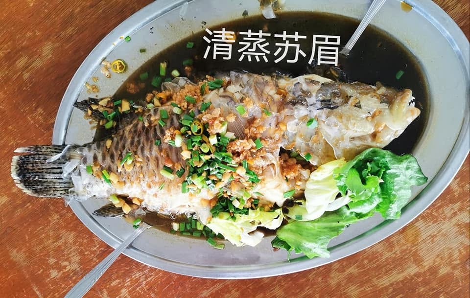
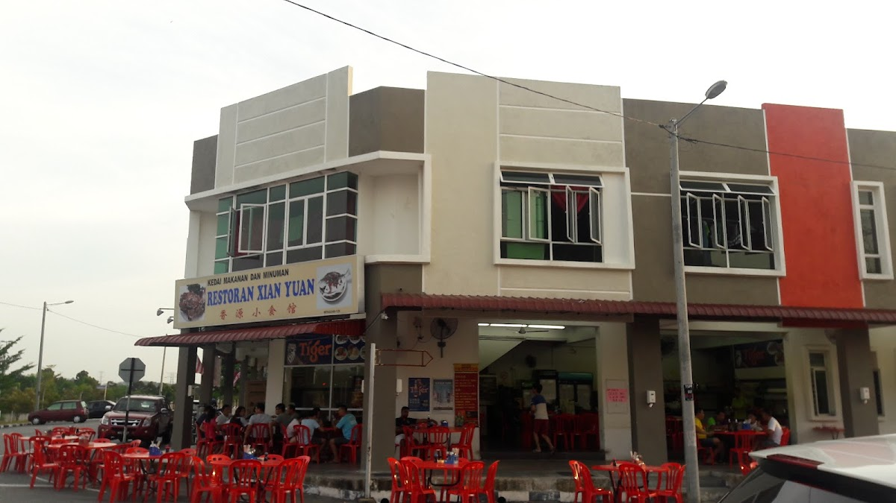

01
清蒸苏眉
Steamed Sumei Fish
ALOR GAJAH · MELAKA
从镬气小炒到惹味海鲜，香源小食馆用实在份量与熟悉味道，陪伴每一次家人朋友的聚餐。

OUR TABLE
一顿好饭是刚起锅的镬气、足够分享的份量，还有一家人围桌聊天的声音。无论是简单午餐还是朋友聚会，来到香源，就坐下来慢慢吃。
PLAN YOUR VISIT
午市 12:00 — 2:00
晚市 5:00 — 9:30
SP6, 1, Jalan Sg Petai Permai,
78000 Alor Gajah, Melaka
高峰时段建议提前来电，
我们会尽力为您留座。